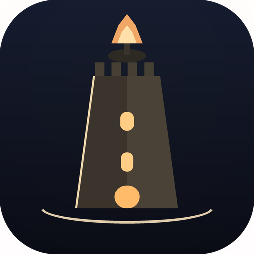

Watchman on the Wall
A game of community care, intercession and spiritual watchfulness.
Named members carry hidden burdens. Keep the wall, and restore them gently.
“Son of man, I have made you a watchman for the house of Israel.”
Ezekiel 33:7
Installing on Android
- Download
watchman-on-the-wall-1.1.0.apk.
- Open it. Android will warn about installing from an unknown source — that is expected for apps not distributed through Play.
- Tap Settings in the prompt, allow installs from your browser or file manager, then tap Install.
- If Play Protect shows a scan prompt, choose Install anyway.
No Play Store account needed. The APK is signed with a release key, so it installs
cleanly and survives updates without losing your saved game.
Installing on Windows
- Download
watchman-on-the-wall-1.1.0-windows-x64.zip.
- Right-click the ZIP → Extract All. Running it straight from the ZIP will fail.
- Open the extracted folder and run Watchman on the Wall.exe.
SmartScreen may appear because the build is not code-signed. Click
More info → Run anyway. The app makes no network calls and stores saves locally.
Installing on Linux
- AppImage:
chmod +x watchman-on-the-wall-1.1.0-linux-x86_64.AppImage then run it.
- Debian/Ubuntu:
sudo dpkg -i watchman-on-the-wall-1.1.0-linux-amd64.deb
Install as a web app
iPhone / iPad: open the game in Safari, tap Share, then Add to Home Screen.
Android: open in Chrome and tap Install app when prompted, or use the ⋮ menu → Add to Home screen.
Desktop browsers: use the install icon in the address bar to get a standalone window.